Computersjakk, del I
Klassisk tresøk
Kort historie
Tyrkeren (1770)
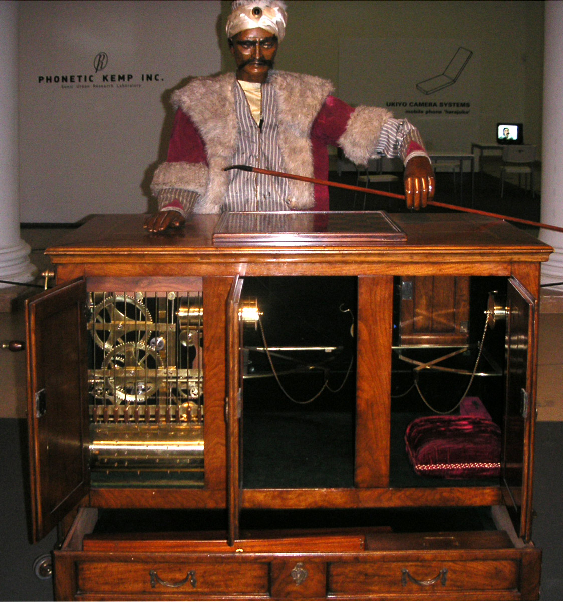
El Ajedrecista (1890? 1910?)
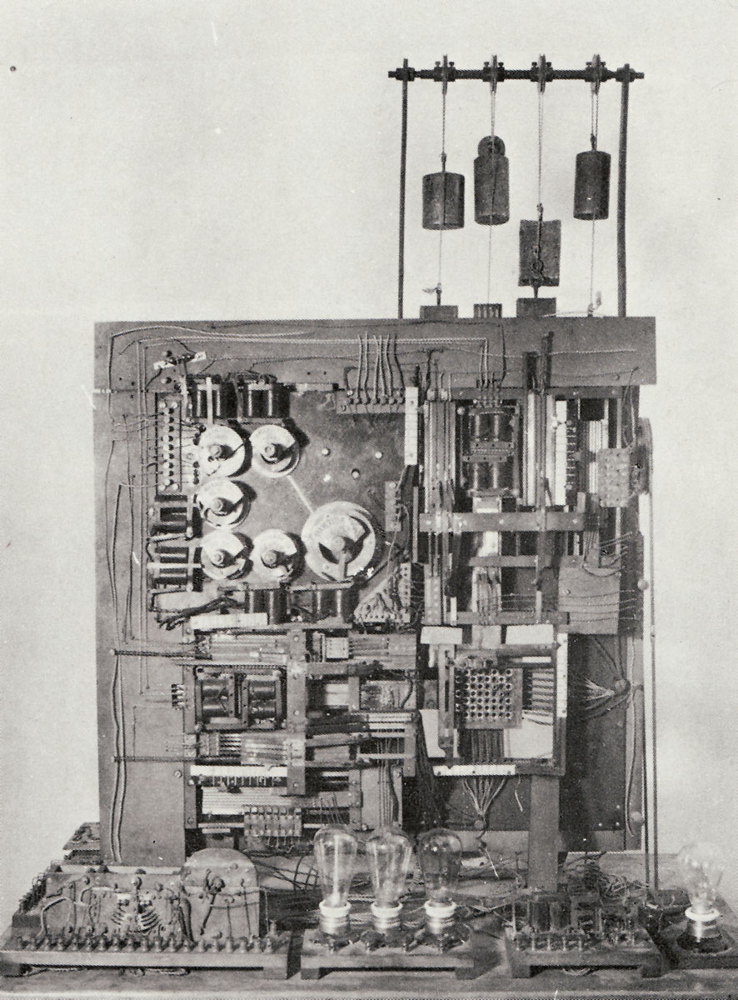
Minimaks-teoremet (von Neumann, 1928)
Turochamp (Turing, 1948)

Den vitenskaplige epoken (1950-1980)
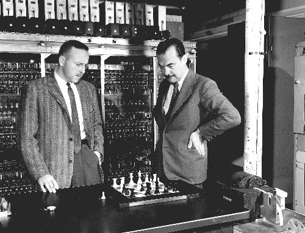
- De fleste programmer ble utviklet av informatikere ved universiteter.
- Kald krig-rivalisering mellom amerikanske og sovjetiske forskningsmiljøer.
- Forskning ble publisert.
Den kommersielle epoken (1980-2000)
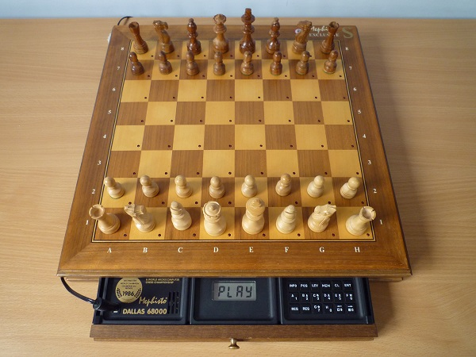
- Datamaskiner ble billige nok til at vanlige forbrukere kunne kjøpe dem.
- Selskaper som Mephisto, Saitek, Novag og Fidelity lagde dedikerte sjakkcomputere med innebygde sjakkbrett.
- Kommersielle sjakkprogrammer og -computere ble en stor suksess.
- De ledende sjakkprogrammererne holdt sine teknikker hemmelige.
- Akademiske programmer begynte å bli akterutseilt.
Deep Blue (1996-1997)

Open Source-epoken (2000-)
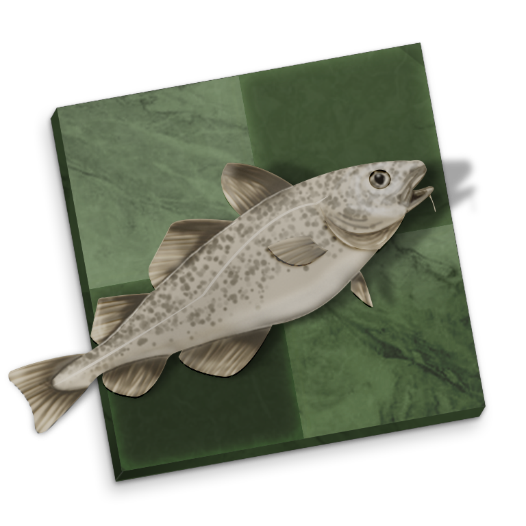
- Etter hvert som datamaskiner ble raskere, krympet markedet for kommersielle sjakkmotorer.
- Samtidig begynte den akademiske interessen for computersjakk å avta etter Deep Blue.
- I den mindre konkurransepregede atmosfæren begynte amatørprogrammerere å dele kode og ideer på Internet.
- Til sist dukket det opp to GPL-programmer (Fruit og Stockfish) som kunne konkurrere med og etter hvert passerte de beste kommersielle programmene.
Alpha Zero (2017)
Minimaks-tresøk
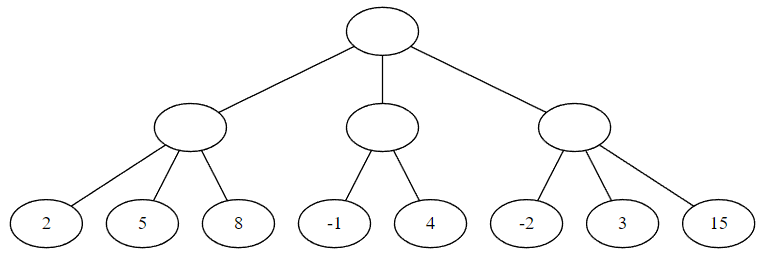
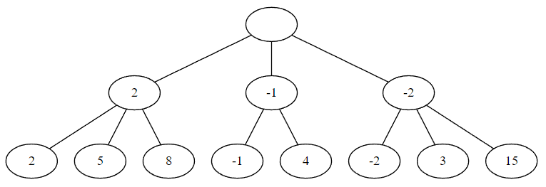
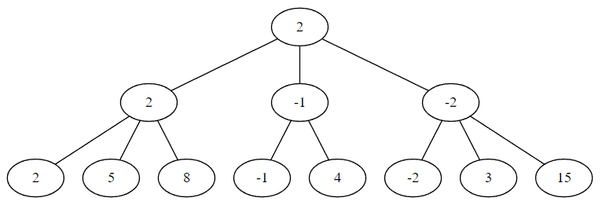
Minimaks-algoritmen
minimax(board: Board, depth: Int) -> Int
var ourMove = sideToMove(board) == us
if depth == 0
return evaluate(board)
else
var result = ourMove ? -INFINITY : +INFINITY
for move in possibleMoves(board)
var value = minimax(doMove(board, move), depth - 1)
if (ourMove && value > result) ||
(!ourMove && value < result)
result = value
return result
Det ser litt grisete ut med den kondisjonelle logikken basert på ourMove. Kan
vi forenkle?
Negamaks-algoritmen
negamax(board: Board, depth: Int) -> Int
if depth == 0
return evaluate(board)
else
var result = -INFINITY
for move in possibleMoves(board)
var value = -negamax(doMove(board, move), depth - 1)
if value > result
result = value
return result
Problem: Størrelsen på spilltreet
- Gjennomsnittlig antall trekk i sjakk er ca. 35.
- Dette betyr at et søk 10 halvtrekk fremover krever ca. \(2.8 \cdot 10^{15}\) noder.
- Et slikt søk ville tatt 10 år hvis man søker 10 millioner noder/sekund.
- Vi trenger en metode for å dramatisk redusere størrelsen på treet.
Alfa-beta-avskjæringer
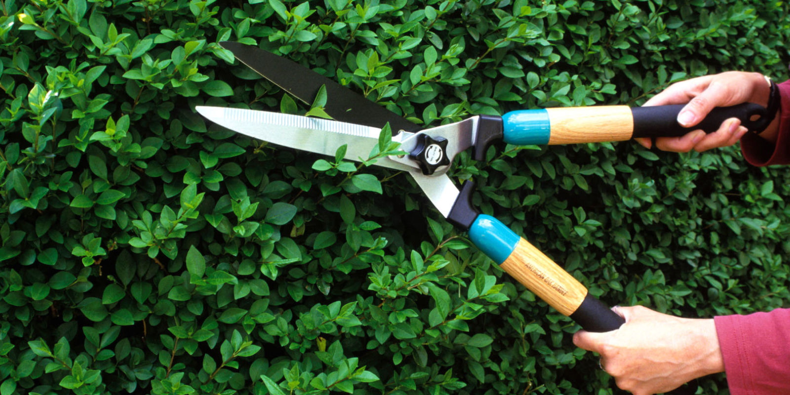
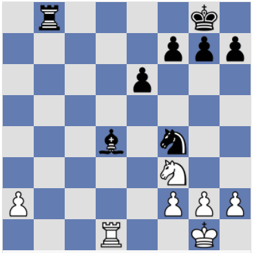
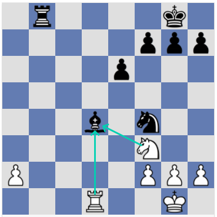
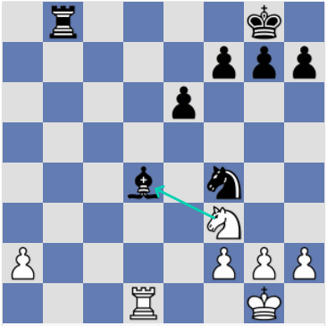
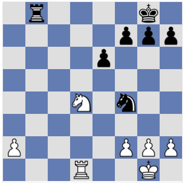
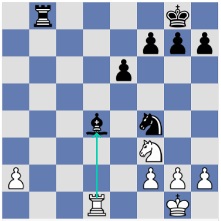
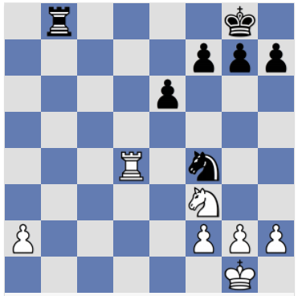
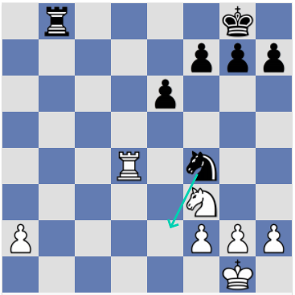
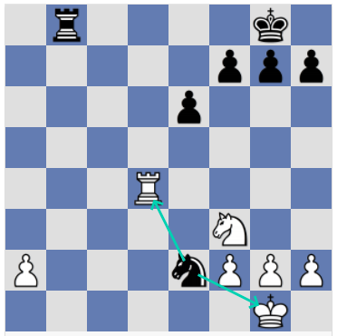
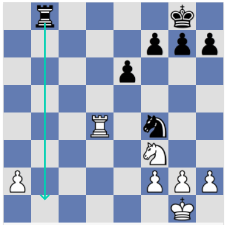
Negamaks med alfa-beta-avskjæringer
negamax(board: Board, alpha: Int, beta: Int, depth: Int) -> Int
if depth == 0
return evaluate(board)
else
for move in possibleMoves(board)
var value =
-negamax(doMove(board, move), -beta, -alpha, depth - 1)
if value >= beta
return value // EARLY RETURN!
if value > alpha
alpha = value
return alpha
- Forgreningsfaktoren (FF) til et spilltre er gjennomsnittlig antall lovlige trekk.
- Den effektive forgreningsfaktoren (EFF) til en tresøkingsalgoritme er gjennomsnittlig forhold mellom antall noder ved et søk til dyp \(n\) og et søk til dyp \(n-1\).
- For et rent negamaks-søk uten alfa/beta er FF = EFF.
- For negamaks med alfa/beta er EFF lik kvadratroten av FF, under forutsetning av at trekksorteringen er perfekt (dvs. at det beste trekket alltid blir søkt først).
- Dette bringer EFF for sjakk ned til ca. 6.
- Et søk med dyp 5 hele trekk gir et tre med 60 millioner noder, eller ca. 10 sekunder hvis vi søker 10 millioner noder/sekund.
- Hvordan kan vi sørge for at det beste trekket alltid blir søkt først?
Trekksortering
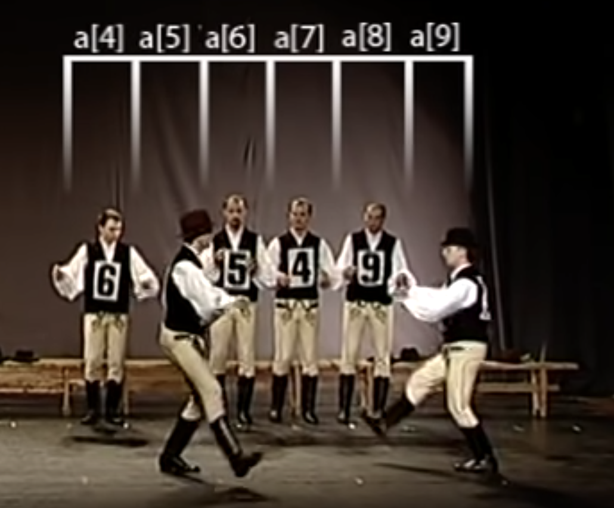
Transposisjonstabeller
Sjakkprogrammer bruker en stor hashtabell til å lagre informasjon om stillinger de tidligere har sett i søketreet. Eksempler på informasjon som lagres for hver stilling er:
- Søkedypet for denne stillingen.
- Verdien som ble returnert av søket.
- Hvorvidt denne verdien var en eksakt verdi eller bare en øvre eller nedre grense for den eksakte verdien.
- Det beste trekket som ble funnet.
Det finnes ikke nok minne til å lagre alle stillinger som forekommer i søket. Programmet forsøker å ta vare på de viktigste stillingene og overskrive de mindre viktige.
Hvis en stilling har vært søkt før og er lagret i transposisjonstabellen, og oppstår igjen i søket, kan informasjonen brukes på to måter:
- Hvis det forrige søket var tilstrekkelig dypt, kan vi bruke den lagrede informasjonen og unngå å søke på nytt.
- Hvis det forrige søket ikke var tilstrekkelig dypt, men det er et beste trekk lagret, kan vi prøve dette trekket først. Det er sannsynligvis fremdeles det beste trekket.
Iterativ fordypning
Istedenfor å umiddelbart gjøre et dypt søk er det bedre å først gjøre et søk til dyp 1, så et søk til dyp 2, osv., helt til vi har nådd ønsket dyp eller tiden er brukt opp.
Ved hvert dyp er transposisjonstabellen fylt av massevis av beste trekk fra forrige dyp. Dette hjelper oss til å søke trekkene som sannsynligvis er best først.
Iterativ fordypning forenkler også fornuftig tidshåndtering.
Andre trekksorteringsheuristikker
- Prøv trekk fra transposisjonstabellen, hvis det finnes.
- Prøv slag som ser ut til å vinne meteriell.
- Prøv trekk som var de beste trekkene i søskennoder.
- Sorter resten av trekkene etter hvor ofte de har vært beste trekk tidligere under søket.
Stillhetssøk
- Horisontproblemet: Hva hvis vi er ved dyp 0 (altså en løvnode), men det skjer noe fryktelig i neste trekk?
- Eksempel: Ved dyp 1 slår dronningen et tårn som er forsvart. Evalueringsfunksjonen returnerer et stort tall, fordi vi nettopp vant et tårn.
- Men i virkeligheten er den store scoren feilaktig, fordi motstanderen kan ta dronningen i neste trekk.
To mulige løsninger
- Å ta hensyn til brikker som står i slag i evalueringsfunksjonen.
- Å prøve å la våre å evaluere ustabile stillinger, og å heller søke videre til vi når en stabil og rolig stilling.
- I prakis har den andre løsningen vist seg å fungere bedre. Vi gjør et stillhetssøk (quiescence search).
- Ved dyp 0 kaller vi ikke lenger evalueringsfunksjonen, men stillhetssøket.
- Stillhetssøket ligner på det vanlige søket, bortsett fra at bare slag (og kanskje noen sjakker) blir søkt, og det er lov å la være å gjøre et trekk istedenfor å slå noe.
Nulltrekksavskjæringer
Nulltrekksobservasjonen: I nesten alle sjakkstillinger finnes det et trekk som er bedre enn å gjøre ingenting (å gjøre et "nulltrekk").
Hvordan kan vi bruke dette til å optimere søket?
Rekursiv nulltrekksavskjæring
- Før vi begynner å søke lovlige trekk gjør vi et nulltrekk (dvs. skifter siden som er i trekket uten å gjøre noe trekk) og søker den resulterende stillingen med redusert dyp.
- Hvis søket med redusert dyp returnerer en score >= beta, returnerer vi denne scoren umiddelbart, uten å søke noe trekk.
negamax(board: Board, alpha: Int, beta: Int, depth: Int) -> Int
if depth == 0
return quiescenceSearch(board, alpha, beta)
else
// NEW: Null move pruning
if !isCheck(board)
var nullValue =
-negamax(doNullMove(board), -beta, -alpha, depth - R)
if nullValue >= beta
return nullValue
for move in possibleMoves(board)
var value =
-negamax(doMove(board, move), -beta, -alpha, depth - 1)
if value >= beta
return value // EARLY RETURN!
if value > alpha
alpha = value
return alpha
Rekursiv nulltrekksavskjæring reduserer effektiv forgreningsfaktor for sjakk fra ca. 6 til ca. 3.5.
I motsetning til alfa/beta-avskjæringer er nulltrekksavskjæringer teoretisk usunne: De kan introdusere feil.
Reduksjoner
Claude Shannon skisserte to typer sjakkprogrammer:
- Shannon type A-programmer søker et tre med alle lovlige trekk.
- Shannon type B-programmer søker et tre med alle plausible trekk.
- Inntil nylig vare alle gode sjakkprogrammer av type A.
- Det er for vanskelig å lage en presis plausible-trekk-generator.
- Hybrid mellom type A og type B: Søk alle lovlige trekk, men søk de mindre plausible trekkene med redusert dyp.
- Vi antar at de mindre plausible trekkene viser seg å være dårlige, men hvis de overrasker oss og returner en god verdi, søker vi dem igjen med fullt dyp.
- Hva slags heuristikker kan vi bruke for å bestemme hvilke trekk som er plausible?
- Vi sorterer allerede trekkene basert på hvor gode vi tror de er, med de antatt beste trekkene først.
- Søk trekkene i begynnelsen av listen med fullt dyp. Trekkene senere i listen er som regel svakere. Vi søker dem med redusert dyp, hvis de ikke er spesielt spennende.
negamax(board: Board, alpha: Int, beta: Int, depth: Int) -> Int
if depth == 0
return quiescenceSearch(board, alpha, beta)
else
var moveCount = 0
for move in possibleMoves(board)
// NEW: Late More Reductions
if moveCount >= 3 && !isExciting(move)
var lmrValue =
-negamax(doMove(board, move), -beta, -alpha, depth - R)
if lmrValue <= alpha
continue // SKIP FULL DEPTH SEARCH!
var value =
-negamax(doMove(board, move), -beta, -alpha, depth - 1)
if value >= beta
return value // EARLY RETURN!
if value > alpha
alpha = value
moveCount++
return alpha
Hvilke trekk er "spennende" og bør alltid søkes med fullt dyp?
Noen ideer som ofte fungerer bra:
- Sjakker
- Slag som vinner materiell
- Bondeforvandlinger
- Trekk som truer noe skummelt
- Trekk som ofte har vært gode tidligere i søket
- Trekk som ofte har vært gode svar på trekket motstanderen nettopp gjorde.
Denne typen reduksjoner kan presse den effektive forgreningsfaktoren for sjakk ned til et sted mellom 1.5 og 2.
Treet er imidlertid så inhomogent at det ikke lenger gir noe særlig mening å snakke om dypet på treet eller effektiv forgreningsfaktor.
Utvidelser
I tillegg til å redusere dypet for mindre interessante trekk, gir det mening å utvide dypet for spesielt interessante trekk.
Før pleide de fleste programmer å utvide sjakker, tvungne tilbakeslag, og ofte bondetrekk til syvende rad.
Dessverre har utvidelser en tendens til å øke den effektive forgreningsfaktoren. De brukes derfor ikke så ofte lenger.
Unntaket er den ene gjenlevende ideen fra Deep Blue:
Et singulært trekk er et trekk som er det eneste gode trekket i en stilling.
Singulære utvidelser betyr at dypet økes med 1 for alle singulære trekk.
Denne teknikken kan ofte hjelpe programmet til å finne veldig lange forserte varianter mye raskere.